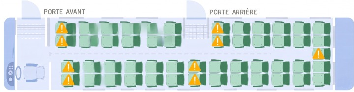

BAFA & BAFD
FORMATION
Modules obligatoires à retrouver dans les formations :
- PSAADRAFRA
- Différents projets, ACM, acteurs
- Connaissance du public
- Réglementation
- Responsabilité civile et pénale
- Vie Quotidienne
- Handicap et inclusion
- Harcèlement, maltraitance, VSS
- Relationnel en ACM
- Laïcité
- Liberté, autorité, sanction
- Les contrats
- Grands-jeux & veillées des stagiaires
- Atelier Technique (blog et réunion par exemple)
1. Exemple de planning pour une session de BASE BAFA
| JOUR 1 SAMEDI |
JOUR 2 DIMANCHE |
JOUR 3 LUNDI |
JOUR 4 MARDI |
JOUR 5 MERCREDI |
JOUR 6 JEUDI |
JOUR 7 VENDREDI |
JOUR 8 SAMEDI |
||
|---|---|---|---|---|---|---|---|---|---|
| MATIN | 9h | [9h] Pot d'accueil + Brise-glace | [9h] Petits jeux | [9h] Vitamine par les stagiaires | [9h] Vitamine par les stagiaires | [9h] Vitamine par les stagiaires | [9h] Vitamine par les stagiaires | [9h] Grasse mat + Laïcité | [9h] Vitamine par les stagiaires |
| 10h | [10h] Investissement des locaux | [10h] Projets, ACM, Acteurs & Contrats | [10h] Réglementation | [10h] Handicap / Inclusion et accessibilité | [10h] Grand jeu grp 1 | [10h] Gestion du blog + Laïcité | [9h30] Création CV, LM & Stage | [10h] Entretiens (3) | |
| REPAS | |||||||||
| APREM | 13h30 | [13h30] Rôle de l'animateur & cursus BAFA | [13h30] Connaissance des publics | [13h30] Responsabilités civile & pénale | [13h30] Grand jeu grp 3 (Enquête) | [13h30] Les contrats | [13h30] Grand jeu groupe 2 | [13h30] Grand jeu grp 4 | [13h00] Bilan collectif de la session |
| GOÛTER | |||||||||
| APREM | 16h30 | [16h30] Rôle de l'animateur & cursus BAFA | [16h30] Restitution partie 2 | [16h30] Vie quotidienne | [16h30] Harcèlement / Conduite à risque | [16h30] Réunion + Gestion de conflits | [16h30] Liberté, autorité & sanction | [16h30] Quiz Kahoot finale | [14h] Départ |
| VEILLEES | 20h30 | [20h30] Prepa jeux (Entretiens 1) | [20h30] Prepa grd jeux / veillées | [20h30] Veillées grp 4 (Casino) | [20h30] Veillées grp 2 (Conte) | [20h30] Prepa jeux (Entretiens 2) | [20h30] Veillées grp 3 (Musicaux) | [20h30] Veillées grp 1 (Cabaret) | |
2. Exemple de planning pour une session d'APPROFONDISSEMENT
| JOUR 1 LUNDI |
JOUR 2 MARDI |
JOUR 3 MERCREDI |
JOUR 4 JEUDI |
JOUR 5 VENDREDI |
JOUR 6 SAMEDI |
||
|---|---|---|---|---|---|---|---|
| MATIN | 9h | Accueil | Forum - Mise en route | Forum - Mise en route | Forum - Mise en route | Forum - Mise en route | Forum - Mise en route |
| 10h | [10h] Présentation stage / DRAJES | [10h] Analyse stage pratique | [10h] Analyse stage pratique | [10h] Réglementation & Transport | [10h] Topo aux choix | [10h] Grande Foire aux PPAs | |
| REPAS | |||||||
| APREM | 14h | [14h] Installation chambres / Petit groupe | [14h] Prépa / Installation | [14h] Prépa / Installation | [14h] Prépa / Installation | [14h] Temps de Prépa | [14h] Évaluation fin de stage |
| APREM | 15h30 | [16h] PSAADRAFRAA + Courbe | [15h] GA 1 : Thématique | [15h] GA 1 : Thématique | [15h] GA 2 : Séjours Vacances | [15h] GA 2 : Ados / Préados | [16h] Administratif + Départ |
| GOÛTER | |||||||
| SOIR | 17h30 | [17h30] Vie d'un groupe / Lancement GA 1 | [17h30] Lancement projet personnel + Prépa | [17h30] Lancement GA 2 + Prépa | [17h30] Temps de Prépa | [17h30] GA 2 : Séjours Vacances 2/2 | |
| SOIR | 18h30 | [18h30] Temps de Prépa | [18h30] Temps de Prépa | [18h30] VHSS : Violences Sexistes et Sexuelles | [18h30] Temps de Prépa | [18h30] Temps de Prépa | |
| SOIR | 20h30 | [20h30] Prépa GA 1 (Entretiens début) | [20h30] Addiction / Borderline | [20h30] Prépa GA 2 (Entretiens mi-stage) | [20h30] GA 2 : Expression & Spectacle | [20h30] Burger Quiz de l'Animation | |
Cliquez sur un temps dans le planing pour l'afficher en détail
🏆 Quiz Final de Session
Quiz convivial qui vise à valider l'apprentissage et les acquis de la formation.
- Quel est le taux d'encadrement minimal pour un groupe d'enfants de plus de 6 ans en ACM ?
- Dans une équipe d'animation, quel est le pourcentage minimum de personnes diplômées (BAFA ou équivalent) ?
- Que signifie le troisième 'A' dans OPSAADRAFRA ?
- Qui écrit le PA ?
- Qui a créé la pyramide des besoins de l'enfant ?
- Que signifie l'acronyme ALSH ?
- Que signifie PEDT ?
- Le SB est malade, les enfants de 15-17 ans peuvent-ils se baigner ?
- L'animateur stagiaire peut-il encadrer une sortie au village sans animateur diplômé ?
- Je n'ai pas mon code de la route, puis-je encadrer une sortie vélo ?
- J'ai le droit de dormir pendant la sieste des 3-6 ans ?
- À partir de quel âge il n'y a plus de mixité dans les dortoirs ?
- Il faut un diplôme spécial pour encadrer une sortie VTT ?
- Combien peut-il y avoir d'enfants au maximum de plus de six ans en même temps dans l'eau ?
- Qui rédige le projet pédagogique ?
- À partir de quel âge peut-on faire dormir des enfants dans des lits superposés ?
- Il me manque un casque de vélo pour des 12-14 ans, puis-je partir quand même en balade ?
- Un enfant casse une vitre à l'accueil de loisirs, dans le cadre d'une activité. Quelle responsabilité est engagée ?
- Combien de jours minimum doit durer un stage pratique BAFA ?
- À partir de quel âge peut-on mettre un enfant à l'avant d'un véhicule ?
- Dans le cadre du chapitre "Handicap & Inclusion", à quoi correspond cette illustration ?
- Avec 33 ados dans un ACM (dont un jeune dyslexique), combien faut-il d'animateur au minimum ?
- Les quotas d'encadrement sur les pistes de ski sont différents de la normale ?
- Quels équipements/médicaments sont interdits dans une trousse pharma ?
- Combien d'heures peut-on laisser un groupe de 15-17 ans en autonomie à l'extérieur du centre ?
- Les relations amoureuses entre animateurs sont interdites ?
- Que signifie ERP ?
- Un animateur garçon peut encadrer les douches des filles ?
- En combien de temps maximum doit-on avoir terminé son cursus bafa ?
- Que signifie le sigle PAI ?
- En séjour de vacances, un animateur peut-il être de 'repos' tout en restant sur le centre ?
- Quelle est la durée maximale d'un CEE ?
- Un enfant se confie sur des violences subies à la maison. Quelle est votre première action ?
- Dans quelle catégorie de handicap classe-t-on les troubles "Dys" ?
- Ai-je le droit d'exercer ma religion sur un séjour en ACM ?
- Les cinquièmes sont obligatoires en ACM ?
- Puis-je faire une colonie avec que des repas végétariens ?
- Quels sont les trois domaines de responsabilité de l'animateur concernant la sécurité des mineurs ?
- Lors d'une activité de baignade dans une piscine, où se place l'animateur BAFA ?
- Combien d'encadrants doivent être présents pour encadrer 22 enfants de moins de six ans ?
O PSAADRASUFRA
- Objectifs
- Quels sont les buts précis de l’activité ou du projet ?
- Quels apprentissages, valeurs ou compétences souhaite-t-on développer ?
- Comment cette activité s’insère-t-elle dans le projet global du séjour ?
- Préparation
- Quels matériels, lieux, documents sont nécessaires ?
- Quelle organisation préalable est requise (réservations, autorisations) ?
- Quels rôles et responsabilités pour chaque animateur ?
- Sensibilisation
- Comment informer et motiver les jeunes avant l’activité ?
- Quels supports ou messages utiliser pour capter leur attention ?
- Y a-t-il des préjugés ou peurs à lever ?
- Aménagement
- Comment adapter l’espace et le matériel pour l’activité ?
- Faut-il prévoir des zones spécifiques pour différents groupes ou étapes ?
- Comment assurer l’accessibilité pour tous (handicap, âge, niveau) ?
- Accueil
- Comment accueillir les participants (rythme, ambiance, consignes) ?
- Comment présenter l’activité pour susciter l’intérêt et la confiance ?
- Comment gérer les éventuelles appréhensions ou réticences ?
- Déroulement
- Quelles sont les différentes étapes de l’activité ?
- Comment gérer le temps pour respecter le planning ?
- Comment adapter en cas d’imprévu (météo, matériel manquant, groupe difficile) ?
- Rythme
- Comment alterner moments calmes et temps d’action ?
- Quelle durée pour chaque phase pour maintenir l’attention ?
- Comment prévoir des pauses adaptées aux besoins des jeunes ?
- Animation
- Quelles techniques d’animation privilégier (jeux, discussions, mises en situation) ?
- Comment encourager la participation et la coopération ?
- Comment gérer les conflits ou difficultés relationnelles ?
- Sécurité / Urgence
- Quels sont les risques liés à l’activité ?
- Quelles mesures de sécurité mettre en place ?
- Qui est responsable en cas d’incident ?
- Comment réagir en situation d’urgence (contact secours, premiers soins) ?
- Fin
- Comment clôturer l’activité de manière positive ?
- Prévoir un temps de bilan ou de débriefing collectif.
- Comment remercier et valoriser les participants ?
- Rangement
- Comment organiser le rangement du matériel et de l’espace ?
- Qui est responsable de cette phase ?
- Comment sensibiliser les jeunes à l’importance du rangement ?
- Analyse
- Quels points ont bien fonctionné ?
- Quelles difficultés ont été rencontrées ?
- Quelles améliorations envisager pour la prochaine fois ?
- Comment recueillir le retour des participants et des animateurs ?
📈 La Courbe d'Animation
Il est essentiel de maîtriser la courbe de son activité pour gérer l'énergie du groupe. Voici un schéma classique de l'évolution de l'intensité :

Lancement > Montée en puissance > Point culminant > Retour au calme
Transports
- Brainstorming : À quoi pensez-vous en entendant « transport » ? (Bus, car, train, avion, vomi, ceinture...)
- À l’arrivée du car, vérifier l’état général (vitres, carrosserie, etc.). En cas de problème, prévenir le conducteur. La sécurité des enfants (et des animateurs !) est une priorité, votre responsabilité pénale est engagée. Vérifier aussi la présence de la trousse de secours et du gilet jaune au besoin. Regarder également l'état de santé du chauffeur, s'il est fatigué, ou ivre, il ne doit évidemment pas conduire -> refuser de faire monter les enfants.
- Organisation des bagages : qui met les valises dans le car ? Les jeunes ou les animateurs ? -> En fonction de tranche d'âge.
- Les enfants cherchent souvent la meilleure place et rangent leurs valises sans attention. Leur rappeler de faire attention ou laisser les animateurs s’en charger.
- Le chauffeur peut demander la liste des jeunes et le nombre d’enfants/animateurs présents.
- Que prennent les jeunes dans le bus ? Boissons, nourriture ? À adapter selon la durée du trajet. Pour une sortie piscine, rien à prendre ; pour un long trajet, prévoir eau et pique-nique si un arrêt est prévu.
- Placement dans le car : où s’installent les animateurs ? -> Doivent être répartis dans le car ! Éviter pour les jeunes le centre au fond, près des portes et les places sans fauteuils devant :ce sont des places déconseillé mais pas interdit. Strapontins par contre interdits.

- L’animateur au fond du bus remonte l’ensemble du groupe. Idéalement, les animateurs sont répartis partout.
- Avant de partir, vérifier que tout le monde a bien attaché sa ceinture de sécurité. C’est obligatoire et fondamental.
- En cas de mal des transports, placer les jeunes sujets à ce problème à l’avant et prévoir des sacs plastiques à garder sur sois !
- Attention à la hauteur de la marche lors de la montée et descente, surtout pour les enfants de moins de 10 ans. Toujours placer un animateur pour compter les enfants à la montée et à la descente.
- Toilettes dans le bus : les chauffeurs préfèrent souvent qu’on ne les utilise pas. Prévoir un passage aux toilettes avant le départ.
- Attention à la hauteur de la soute, les enfants peuvent se cogner.
- Organisation de la soute : selon la configuration du car, adapter la disposition des animateurs. Parfois les soutes communiquent, parfois non. Pour les petits, placer les valises à l’avant de la soute.
- Caler les bagages pour éviter qu’ils ne basculent en cas de freinage brusque.
- Des valises bien alignées donnent une bonne image du séjour. Des valises mal rangées donnent une mauvaise impression. (Cela fait parties des vitrines du séjour !)
- À l’approche de l’arrivée, réveiller les animateurs qui dorment.
- Avant de descendre, faire un point avec les animateurs et donner les consignes aux jeunes, car une fois dehors ils courent vers leurs parents.
- À l’arrivée, placer un animateur pour compter les enfants à la descente, un autre pour sortir les valises (surtout pour les petits), et un autre pour surveiller ceux qui partent et les noter.
- En fin de trajet, faire un tour du bus pour vérifier qu’aucune affaire ou enfant n’a été oublié. Dans les bus modernes, une alarme signale si un enfant est resté à bord.
- Compter systématiquement les enfants en montant et en descendant du bus.
Entretien individuels
En début de séjour
Milieu de séjour
Fin de séjour
Handicap & Inclusion
"Le handicap ne doit pas être un frein à la vie en collectivité."
Handicap Moteur
Atteinte de la capacité du corps à se mouvoir (paralysie, amputation, myopathie, etc.).
En ACM : Vigilance sur l'accessibilité des locaux et l'adaptation des jeux de déplacement.
Handicap Sensoriel
Atteinte des sens : visuel (malvoyance/cécité) ou auditif (malentendant/surdité).
En ACM : Utiliser des supports tactiles, sonores ou visuels contrastés selon le besoin.
Mental / Psychique
Déficience intellectuelle (Mental) ou troubles de la personnalité/comportement (Psychique).
En ACM : Rassurer, ritualiser la journée et adapter le niveau de compréhension des consignes.
Maladies invalidantes
Maladies chroniques impactant la vie quotidienne (Diabète, Asthme, Épilepsie, etc.).
En ACM : Connaître le PAI (Projet d'Accueil Individualisé) et les protocoles d'urgence.
Zoom sur les Troubles "Dys"
- Dyslexie : Lecture difficile.
- Dyscalculie : Calcul difficile.
- Dysorthographie : Orthographe.
- Dysphasie : Parole / Langage.
- Dyspraxie : Gestes / Coordination.
- Dysgraphie : Écriture.
- Dysgnosie : Reconnaissance.
- Dyschronie : Repérage temporel.
- Dyspropodie : Rythme de la voix.
- Dysmotricité : Mouvements.
Les Clés de l'Inclusion
- L'anticipation : Échanger avec la famille et le jeune avant le séjour.
- L'adaptation : On n'exclut pas, on adapte la règle ou l'activité pour que tout le monde joue.
- La sensibilisation : Expliquer aux autres enfants (sans stigmatiser) pour favoriser l'entraide.
- Le PAI : Document médical essentiel qui définit les soins et les protocoles d'urgence.
Réunions du soir
Chaque soir, APRES le coucher des enfants, les animateurs se réunissent pour faire le point sur la journée. (L'heure dépend donc de la tranche d'âge)
- Partie 1 : Debrief journée
- Retour sur les activités (points forts, points faibles).
- Échange sur le comportement des enfants (cas particuliers, fatigue, petits bobos).
- Analyse du fonctionnement de l'équipe (cohésion, communication).
- Partie 2 : Infos diverses
- Rappels de sécurité ou d'hygiène si nécessaire.
- Logistique (matériel cassé, besoins spécifiques).
- Informations de la direction (SDJES, parents, organismes).
- Partie 3 : Programmation
- Validation du planning détaillé du lendemain.
- Répartition précise des rôles (qui gère quoi ?).
- Préparation du matériel et anticipation des imprévus.
- Partie 4 : Cinquième repas
- Partie facultative pour les anims !
- Moment de détente et de cohésion pour l'équipe d'animation.
- Débriefing informel et convivialité (=> moment potin).
- Vigilance sur le sommeil !
- Le bavard : Parle beaucoup, coupe la parole, discute avec ses voisins.
- Le suiveur : Toujours d'accord avec tout le monde, ne propose rien.
- L'imposant : Veut imposer ses idées, ne laisse pas les autres s'exprimer.
- Le fatigué : Veut écourter la réunion, propose d'improvisé le lendemain.
- Le perdu : Ne comprend rien, pose des questions hors sujet.
- Le répétitif : Revient sans cesse sur un point déjà traité.
- Le participant classique : S'exprime normalement, propose des idées, écoute les autres.
- Le maître de réunion : Anime, distribue la parole, recentre le débat, veille au respect du temps.
JEU - SIMULATION D'UNE RÉUNION :
Objectif : Simuler une réunion du soir entre animateurs pour expérimenter les dynamiques de groupe
et la prise de décision.
Chaque participant reçoit un rôle à jouer pour rendre la réunion vivante et pédagogique.
Déroulement : Chacun tire un rôle au hasard. Le maître de réunion lance un sujet à discuter (ex : organisation d'une activité, gestion d'un problème du jour).
L'objectif est d'observer les interactions, de repérer les difficultés et de réfléchir ensemble à des solutions pour améliorer la communication et la prise de décision en équipe.
Astuce : À la fin, faire un petit bilan sur le ressenti de chacun et les points à améliorer pour les vraies réunions !
CV, LM et Recherche de Stage
📄 Le CV et la Lettre de Motivation
Pour décrocher un stage ou un contrat, votre dossier doit être impeccable :
- Le CV : Doit être clair et visuel.
- Adresse : Ne mettez jamais votre adresse précise (rue/numéro). Indiquez la grande ville la plus proche. Exception : pour un centre de loisirs de petite commune, mettez le nom du village mais restez vague sur l'adresse exacte !
- Photo : On ne peut pas vous obliger à en mettre une, mais c'est plus que recommandé pour humaniser votre profil.
- Diplômes : Créez une section dédiée bien visible avec tous vos diplômes (BAFA en cours, PSC1, SB, permis B, conduite de minibus etc.) pour que le recruteur n'ait pas à les chercher.
- La LM : Ne faites pas de copier-coller ! Chaque séjour ACM est différent !
- Elle doit comporter un en-tête propre et un objet récapitulant le poste visé.
- Structurez-la selon la méthode MOI / VOUS / NOUS (Qui je suis / Qui vous êtes et pourquoi vous me plaisez / Ce qu'on va accomplir ensemble).
🔍 Où chercher son stage / son poste ?
En plus des candidatures directes, utilisez les plateformes spécialisées :
- Planet'Anim : Le site incontournable pour les offres d'emploi et de stage pratique.
- Groupes Facebook : Le groupe "Recherche de stage pratique BAFA" est très actif.
- UCPA (Webanim) : Un pilier pour trouver un stage. Créez votre compte pour accéder à des centaines de séjours.
- Le bouche à oreille : Parlez-en autour de vous. Astuce : Créez-vous un fichier Excel avec tous les contacts que vous récupérez (noms, numéros de tel, emails) pour garder une trace de votre réseau.
🏢 Liens organismes de recrutement
Retrouvez ci-dessous une liste d'organismes sérieux auxquels vous pouvez envoyer vos candidatures spontanées :
- Agence Nature
- Regards
- Avea Vacances
- UFCV
- CCE Air France
- CCGPF Cheminots
- Cap Juniors
- Cap Monde
- Chemins du Monde
- CIE Thales
- Croq Vacances
- Djuringa Juniors
- Gocolo
- Le Zèbre
- Mondial Junior
- Nouvelles Vagues
- Passion Aventure Junior
- CGCV
- Sans Frontières
- Séjours AJD
- SILC
- Sport Elite Jeunes
- Temps des Copains
- Temps Jeunes
- VISA Loisirs
- Zigotours
💡 N'hésitez pas à postuler individuellement auprès de chaque organisme pour maximiser vos chances !
Gestion du blog
Le blog est bien plus qu'un simple journal de bord : c'est l'une des 3 vitrines du séjour qui permettent aux parents de juger la qualité de l'encadrement :
- L'état de la valise : Au retour, une valise rangée et propre = un enfant soigné.
- Le point de contact : L'accueil au début et l'échange au départ du séjour.
- Le blog / courrier : Le lien quotidien qui rassure et valorise le vécu de l'enfant.
Logistique du blog :
- Qui poste ? Idéalement un roulement entre animateurs. Il est aussi très formateur de faire participer les enfants à la rédaction (dictée à l'adulte ou article écrit par eux).
- Quoi mettre ? Le menu du jour, les activités phares, des citations d'enfants, et surtout de belles photos d'ambiance.
- Quelles plateformes ? OnDonneDesNouvelles, OnLoge, blogs internes aux organismes, ou réseaux sociaux privés (Facebook group, Instagram privé).
Quand poster ? Deux modes :
- Mode "Fil Rouge" : On poste un message court après chaque activité majeure.
Exemple : "On revient de l'accrobranche, c'était super ! Direction la piscine cette aprèm !" Cela donne une impression de direct très appréciée des parents. - Mode "Journal de bord" : On fait un seul gros poste à la fin de la journée (pendant la réunion ou après le coucher).
Cela permet de faire un récit complet et structuré de la journée écoulée.
Point sur le droit à l'image :
Le droit à l'image dépend strictement de l'organisme :
- Certains organismes incluent un accord obligatoire à l'inscription.
- D'autres laissent le choix aux parents.
Règle d'or : Vérifiez toujours la liste des refus avant de prendre des photos. Si un enfant n'a pas le droit à l'image, ne le mettez jamais sur la photo, même si vous prévoyez de le flouter !
Réglementation & Sigles ACM
Sigles Essentiels
- DRAJES/SDJES : Délégation Régionale Académique à la Jeunesse, à l’Engagement et aux Sports.
- DDCS/DDCSPP : Direction Départementale de la Cohésion Sociale / de la Cohésion Sociale et de la Protection des Populations
- ACM : Accueil Collectif de Mineurs.
- PE / PP / PA : Projets Éducatif, Pédagogique et d'Animation.
- PEDT : Projet Éducatif Territorial
- BAFA / BAFD : Brevets d'Aptitude (Anim/Dir).
- PMS : Projet de Mise en Sûreté (Plan d'urgence).
- J&S : Jeunesse et Sports
Taux d'Encadrement
Extrascolaire (Colos/Vacances) :
- - 6 ans : 1 anim pour 8 enfants.
- + 6 ans : 1 anim pour 12 enfants.
Périscolaire (Matin/Soir/Midi) :
- - 6 ans : 1 anim pour 10 enfants. (SANS PEDT)
- + 6 ans : 1 anim pour 14 enfants. (SANS PEDT)
- - 6 ans : 1 anim pour 14 enfants. (AVEC PEDT)
- + 6 ans : 1 anim pour 18 enfants. (AVEC PEDT)
Composition de l'Équipe
- Diplômés (BAFA) : Minimum 50%.
- Stagiaires : Maximum 50%.
- Non diplômés : Maximum 20% de l'effectif global.
Santé & Sécurité
- Fiche Sanitaire : Obligatoire pour chaque mineur.
- Assistant Sanitaire (AS) : Obligatoire en séjour avec hébergement.
- Médicaments : Uniquement sur ordonnance médicale.
Focus Baignade
- Hors baignade aménagée : 1 anim pour 5 (-6 ans) ou 1 pour 8 (+6 ans).
- Surveillance : Un Surveillant de Baignade (SB) ou un Maître Nageur (BNSSA) est obligatoire.
- Périmètre : Toujours délimiter la zone de bain.
Voir le détail ICI
Le Cursus BAFA
Le Brevet d'Aptitude aux Fonctions d'Animateur se déroule en 3 étapes clés qu'il faut valider dans un temps imparti.
Session de Formation Générale
Durée : 8 jours minimum (consécutifs ou non).
Cette première étape permet d'acquérir les notions de base : connaissance de l'enfant, réglementation, vie quotidienne et techniques d'animation.
Stage Pratique
Durée : 14 jours minimum.
Mise en situation réelle dans un Accueil Collectif de Mineurs (ACM) déclaré. Vous êtes alors "animateur stagiaire".
Approfondissement ou Qualification
Durée : 6 jours (Approfondissement) ou 8 jours (Qualification).
Dernière étape pour analyser son stage pratique et se spécialiser (ex: grands jeux, petite enfance, voile, etc.).
Délais Réglementaires Globaux
- 30 mois : C'est le délai maximum pour effectuer l'ensemble de la formation (du 1er jour de la formation générale à la fin de l'approfondissement).
- 42 mois : En cas de force majeure, une dérogation de 12 mois peut être accordée par la DRAJES de votre lieu de résidence.
- Passage en jury : Une fois les 3 étapes validées, votre dossier passe automatiquement devant un jury départemental qui délivre (ou non) le diplôme.
Pour plus d'informations officielles et gérer votre dossier :
Site Officiel BAFA-BAFD (Gouvernement)Les Types de Contrats en ACM
Comprendre son contrat est essentiel avant de s'engager sur un séjour ou en centre de loisirs.
Le CEE
Contrat d'Engagement Éducatif
C'est le contrat très largement utilisé dans les colos.
- Statut : N'est pas considéré comme un salaire, mais comme une indemnité de bénévolat. Ce contrat ne dépent donc pas du code du travail.
- Indemnité : Forfait journalier (minimum de 50€ brut/jour).
- Avantages : Nourri et logé par l'organisateur.
- Limite : 80 jours travaillés par an maximum.
- Repos : 24h de repos consécutif par semaine obligatoire.
CDD & Vacataire
Droit commun / Fonction publique
Utilisés principalement en ALSH.
- Rémunération : Payé au SMIC horaire (ou plus selon la grille).
- CDD : Contrat classique avec horaires fixes.
- Vacataire : Payé à la vacation (quelques heures ou la journée). Très fréquent en mairie.
- Avantages : Cotisation chômage classique.
Bénévolat
Engagement associatif
Très fréquent dans le scoutisme ou les petites associations locales.
- Rémunération : Aucune (c'est le principe du bénévolat).
- Défraiement : L'organisateur peut rembourser les frais (transport, repas).
- Cadre : Pas de lien de subordination juridique comme un salarié.
- Avantages : Engagement citoyen et expérience humaine forte.
Comment ça se passe pour les Congés ?
La gestion des congés dépend de votre type de contrat :
- En CEE : Il n'y a pas d'accumulation de "jours de congés payés" comme dans un travail classique. Le repos hebdomadaire (24h) est votre seul temps de coupure. L'indemnité est un forfait global pour la mission.
- En CDD (Animateur) : Vous cumulez 2,5 jours de congés par mois. En fin de contrat, si vous ne les avez pas pris, l'employeur vous verse une Indemnité Compensatrice de Congés Payés (ICCP) égale à 10% de votre salaire total.
- En Vacataire : Le principe est le même que le CDD : une majoration de 10% est souvent ajoutée directement au taux horaire pour compenser l'absence de congés pris.
- En Bénévolat : Pas de contrat de travail, donc pas de notion de congés payés.
Le Relationnel en ACM
"Savoir-être et communication : les piliers d'une équipe soudée et d'un accueil de qualité."
Avec les Mineurs
- Exemplarité : Être un modèle dans ses paroles et ses actes.
- Écoute active : Prendre en compte les besoins et émotions de chacun.
- Juste distance : Être proche mais garder sa place d'adulte référent.
- Autorité bienveillante : Cadre sécurisant sans autoritarisme.
Avec l'Équipe
- Communication : Partager les infos (relais) et exprimer ses besoins.
- Solidarité : S'entraider dans les moments difficiles ou de fatigue.
- Loyauté : Respecter les décisions prises en réunion, même si on était contre.
- Discrétion : Régler les désaccords entre adultes, jamais devant les jeunes.
Avec les Familles
- Accueil : Être disponible et souriant lors des arrivées/départs.
- Transmission : Donner des nouvelles factuelles et positives de l'enfant.
- Professionnalisme : Rester neutre et orienter vers le directeur si besoin.
Avec la Direction
- Transparence : Alerter en cas de problème ou de doute.
- Respect du cadre : Appliquer le projet pédagogique.
- Proposition : Être force de proposition pour enrichir le séjour.
Le Secret de la Dynamique d'Équipe
Une bonne équipe n'est pas une équipe qui n'a pas de problèmes, c'est une équipe qui sait les communiquer et les résoudre ensemble. La communication est la clé !
La Laïcité en ACM
La laïcité n'est pas une opinion, c'est la liberté d'en avoir une.
Les 3 Piliers
- Liberté de conscience : Chacun est libre de croire ou de ne pas croire.
- Séparation : Séparation des institutions publiques et des organisations religieuses.
- Égalité : Égalité de tous devant la loi, quelles que soient leurs convictions ou croyances.
Le Rôle de l'Animateur
- Neutralité : L'animateur ne doit pas manifester ses convictions religieuses ou politiques.
- Écoute : Accueillir la parole de l'enfant sans jugement.
- Cadre : Garantir que les pratiques religieuses individuelles n'entravent pas la vie du groupe.
Cas Pratiques & Application
- Alimentation : Respect des interdits alimentaires (porc, viande) par le biais de menus de substitution (souvent végétariens) sans prosélytisme.
- Pratiques religieuses : Tolérées si elles restent discrètes, individuelles et ne perturbent pas le fonctionnement du séjour.
- Tenue vestimentaire : Dans un organisme public, les animateurs sont soumis à une stricte neutralité. Pour les enfants, la liberté est la règle, sauf si la tenue nuit à l'hygiène ou à la sécurité (ex: baignade).
Liberté, Autorité & Sanction
Le cadre n'est pas une prison, c'est ce qui permet la liberté de chacun au sein du groupe.
Autorité vs Autoritarisme
- L'Autorité : Elle est reconnue par le groupe. Elle se base sur la compétence, la cohérence et l'écoute. On ne "prend" pas l'autorité, on l'acquiert.
- L'Autoritarisme : Il est imposé par la force, le cri ou la menace. Il crée de la frustration, de la peur et n'est pas éducatif.
- La Posture : Être "juste milieu" : ni le "copain" (perte de cadre), ni le "tyran" (perte de confiance).
La Règle et la Loi
- La Loi : Ce qui est immuable (interdit de fumer, de frapper, de sortir seul).
- La Règle : Ce qui est négociable ou adaptable (heures de coucher, répartition des tâches).
- Co-construction : Faire participer les jeunes à l'élaboration des règles pour qu'elles fassent sens pour eux.
La Sanction Éducative
Une sanction n'est pas une vengeance. Pour être éducative, elle doit respecter 4 principes :
- Individuelle : On ne punit pas tout un groupe pour la faute d'un seul.
- Juste et Proportionnée : La sanction doit être en rapport avec la gravité de l'acte.
- Expliquée : L'enfant doit comprendre quel interdit a été bravé et pourquoi il est sanctionné.
- Réparatrice : Elle doit permettre de "réparer" le dommage causé (matériellement ou moralement).
Différents projets, différents ACM, différents acteurs

- 1. La hiérarchie des projets
- Le Projet Éducatif (PE) : Document de l'organisateur (Mairie, Association). Il définit les valeurs et les orientations politiques de la structure. (Ex: Favoriser la mixité sociale, la laïcité).
- Le Projet Pédagogique (PP) : Document du directeur. Il adapte le PE aux spécificités du séjour (lieu, public, équipe). Il définit les objectifs pédagogiques et le fonctionnement concret.
- Le Projet d'Animation (PA) : Document de l'animateur. Il décrit précisément une activité (buts, matériel, étapes, sécurité).
- 2. Les types d'ACM (Rappel de la diversité)
- Accueils sans hébergement : Extrascolaire (vacances) et Périscolaire (matin/soir/midi).
- Accueils avec hébergement : Séjours de vacances (> 3 nuits, > 7 mineurs), séjours courts (1 à 3 nuits), séjours spécifiques (sport, langue, etc.).
- Accueils de scoutisme : Gérés par des associations agréées avec une méthode spécifique basée sur la loi scoute.
SCOUTISME – LEXIQUE PAR MOUVEMENT :
📍 Éclaireuses Éclaireurs de France (EEDF)
🔸 Ronde (6–8 ans) : Lutins
🔸 Cercle (8–11 ans) : Louveteaux
🔸 Équipage (11–15 ans) : Éclaireurs
🔸 Clan (15–18 ans) : Aînés
⚜️ Scouts et Guides de France (SGDF)
🔸 Farfadets (6–8 ans) — Vert
🔸 Louveteaux / Jeannettes (8–11 ans) — Orange
🔸 Scouts / Guides (11–14 ans) — Bleu
🔸 Pionniers / Caravelles (14–17 ans) — Rouge
🔸 Compagnons (17–21 ans) — Vert Sapin
🔸 Projet des ados CAP pour "Concevoir, Agir, Partager"
🕊️ Éclaireuses et Éclaireurs Unionistes de France (EEUdF)
🔸 Louveteaux / Louvettes (8–12 ans) : la Meute
🔸 Éclaireurs / Éclaireuses (12–16 ans) : la Troupe ou Compagnie
🔸 Aînés / Aînées (16–19 ans) : le Clan
🌙 Scouts Musulmans de France (SMF)
🔸 Voyageurs (7–11 ans) — Vert
🔸 Éclaireurs (11–14 ans) — Bleu
🔸 Pionniers (14–17 ans) — Rouge
🔸 Compagnons (17–21 ans) — Marron
✡️ Éclaireuses et Éclaireurs Israélites de France (EEIF)
🔸 Bâtisseurs (8–11 ans) : les "Petits Loups"
🔸 Éclaireurs (11–15 ans) : la Troupe
🔸 Perspectives (15–17 ans) : les "Pif"
🔸 Animateurs (17 ans +) : les "Eks"
⚔️ Guides et Scouts d'Europe (AGSE)
🔸 Louveteaux / Louvettes (8–12 ans) — Jaune
🔸 Éclaireurs / Guides (12–17 ans) — Vert
🔸 Routiers / Guides-Aînées (17 ans +) — Rouge / Brun
🌍 Vocabulaire commun à tous les scouts :
🔹 Foulard : porté par tous, il montre l'appartenance au groupe.
🔹 Froissartage : technique de construction en bois sans clous.
🔹 Bona : la grande gamelle pour cuisiner au feu de bois.
🔹 Promesse : l'engagement solennel du jeune.
💬 Six mouvements, un même esprit : apprendre par l'action et grandir ensemble 🌟 - 3. Les Acteurs de l'ACM
- L'État : Représenté par la SDJES (Service Départemental) ou DRAJES (Régional). Ils contrôlent la sécurité, la santé et la qualité éducative.
- L'Organisateur : Responsable juridique (Mairie, Association loi 1901, Comité d'Entreprise, Structure commerciale).
- L'Équipe de direction : Directeur (BAFD) et adjoints. Responsables du bon déroulement du projet et de la sécurité du groupe.
- L'Équipe d'animation : Animateurs (BAFA, stagiaires ou non-diplômés). Au contact direct des mineurs, ils animent la vie quotidienne et les activités.
- Les Personnels techniques : Indispensables au séjour (cuisiniers, agents d'entretien, chauffeurs).
- Le Public : Les mineurs (au centre du projet) et leurs familles (premiers éducateurs et responsables légaux).
Sources : Yonne.gouv.fr | Jeunes.gouv.fr | Guyane.gouv.fr
Analyse du stage pratique
Ce temps est crucial en formation approfondissement pour permettre aux stagiaires de prendre du recul sur leur première expérience en autonomie.
Méthodologie de la séance :
- 1. Tour de table introductif : Chaque stagiaire présente brièvement son séjour (Lieu, organisme, public accueilli, durée).
- 2. Expression des ressentis : Utiliser des outils (météo du jour, cartes de ressentis) pour exprimer son état d'esprit global après le stage.
- 3. Analyse des réussites : Qu'est-ce qui a bien fonctionné ? Quelle activité a été une réussite ? Quel lien avec les enfants a été fort ?
- 4. Analyse des difficultés : Identifier une situation complexe vécue (conflit, gestion de groupe, fatigue, relation équipe).
- 5. Mutualisation et solutions : En petit groupe ou en grand groupe, on échange sur les situations difficiles pour trouver ensemble des pistes de remédiation.
- 6. Projection sur l'Appro : Faire le lien entre les besoins identifiés pendant le stage et les objectifs de la session d'approfondissement actuelle.
VHSS : Violences et Harcèlements Sexistes et Sexuels
La lutte contre les VHSS est une priorité absolue en ACM. Tout animateur se doit d'être exemplaire et vigilant.
Zéro Tolérance : Aucun comportement sexiste, propos déplacé ou geste inapproprié ne doit être toléré au sein de l'équipe ou envers les mineurs.
En bref, les 3 piliers :
- 1. Prévenir : Informer les mineurs sur leurs droits et leur corps. Adopter une posture professionnelle irréprochable.
- 2. Détecter : Être à l'écoute des changements de comportement, des confidences et des signaux faibles (repli, agressivité, peur).
- 3. Signaler : Tout soupçon ou révélation doit être immédiatement transmis au directeur. Le signalement aux autorités (SDJES / Procureur) est une obligation légale.
Connaissance des Publics
Adapter son animation, c'est d'abord comprendre à qui l'on s'adresse. Voici les grandes caractéristiques par tranches d'âge :
👶 3 - 5 ans (Les Maternelles)
- Besoin de sécurité : L'animateur est une figure de référence rassurante.
- L'imaginaire : Ils vivent dans le monde du "faire semblant".
- Rythme : Attention courte (15-20 min), besoin de sieste et de repères temporels.
- Physique : Développement de la motricité globale, apprentissage de la propreté.
🏃 6 - 8 ans (L'âge de l'école)
- Énergie : Besoin de bouger et de se dépenser physiquement.
- Règles : Ils commencent à comprendre et à respecter les règles collectives.
- Autonomie : Ils veulent faire "tout seul" mais ont besoin d'être guidés.
- Curiosité : Grande soif d'apprendre et de découvrir de nouvelles choses.
👫 9 - 11 ans (Les Grands)
- Groupe : L'importance des copains et de la bande devient centrale.
- Compétition : Ils aiment les défis et se mesurer aux autres.
- Capacités : Meilleure concentration, capables de projets sur plusieurs jours.
- Justice : Très sensibles à l'équité et au respect des engagements.
🎧 12 - 14 ans (Les Pré-ados)
- Transition : Entre l'enfance et l'adolescence, humeur changeante.
- Appartenance : Besoin de s'identifier à un groupe, style vestimentaire.
- Remise en cause : Ils testent les limites et l'autorité de l'adulte.
- Intimité : Besoin de moments à eux, loin du regard des adultes.
📱 15 - 17 ans (Les Ados)
- Responsabilité : Capables de co-construire leur projet de vacances.
- Identité : Recherche de soi, affirmation de ses opinions.
- Vie Sociale : Les relations affectives et amicales sont primordiales.
- Posture : L'animateur devient un "accompagnateur" plutôt qu'un "chef".
🛠️ Ressources Pédagogiques
DÉBATS 4 COINS QCM :
🏕️ Situations sensibles en camp itinérant 15–17 ans
-
Le soir dans un camp itinérant 15–17 ans, tu entends des ados copuler dans la tente :
- Rouge : J'appelle les parents le lendemain
- Vert : J'en parle à l'équipe et aux ados concernés
- Bleu : J'en parle à l'organisme
- Jaune : Je vais les voir discrètement et leur demande s'ils se sont protégés
-
Un animateur casse par erreur un médicament d’un jeune pour une allergie :
- Rouge : J'appelle les parents pour prévenir
- Vert : Je demande au jeune si c’est urgent et on en rachète ensemble
- Bleu : Je vais directement à la pharmacie pour ne pas que le jeune loupe son traitement
- Jaune : J’en parle à l’organisme pour trouver une solution
-
Un adolescent semble triste et isolé pendant l'activité :
- Rouge : J'appelle ses parents pour en parler
- Vert : J'en parle à l'équipe pour organiser un suivi
- Bleu : Je préviens l'organisme pour intervention spécialisée
- Jaune : Je discute discrètement avec le jeune pour comprendre son ressenti
-
Un adolescent arrive en retard à toutes les activités :
- Rouge : J'appelle les parents pour sanction
- Vert : J'en parle à l'équipe pour trouver une stratégie éducative
- Bleu : Je préviens l'organisme pour information
- Jaune : Je lui parle discrètement pour comprendre ses raisons
-
Un adolescent se dispute avec un animateur :
- Rouge : J'appelle les parents pour intervenir
- Vert : J'en parle à l'équipe pour calmer la situation
- Bleu : Je préviens l'organisme pour avis
- Jaune : Je discute discrètement avec l'adolescent pour apaiser les tensions
-
Un adolescent se plaint d'une activité physique trop difficile :
- Rouge : J'appelle les parents pour décision
- Vert : J'en parle à l'équipe pour adapter l'activité
- Bleu : Je préviens l'organisme pour conseil
- Jaune : Je propose discrètement un rythme adapté au jeune
-
Un adolescent oublie régulièrement ses affaires :
- Rouge : J'appelle les parents pour qu'ils interviennent
- Vert : J'en parle à l'équipe pour trouver des solutions
- Bleu : Je préviens l'organisme pour suivi
- Jaune : Je l'aide discrètement à organiser ses affaires
-
Un adolescent ne respecte pas le règlement des sanitaires :
- Rouge : J'appelle les parents
- Vert : J'en parle à l'équipe pour instaurer une sanction
- Bleu : Je préviens l'organisme pour avis
- Jaune : Je parle discrètement avec le jeune pour expliquer le règlement
-
Un adolescent consomme un médicament non-prescrit :
- Rouge : J'appelle les parents pour prévenir
- Vert : J'en parle à l'équipe pour décider de la suite
- Bleu : Je préviens l'organisme pour avis médical
- Jaune : Je questionne discrètement l'adolescent sur le médicament pris
Responsabilité Civile & Pénale
En tant qu'animateur, vous êtes responsable de la sécurité des mineurs. Il est essentiel de distinguer les deux types de responsabilités :
⚖️ Responsabilité Civile
But : Réparer un dommage causé à autrui.
- Concerne les dommages matériels, corporels ou moraux.
- L'objectif est d'indemniser la victime (argent).
- Généralement couverte par l'assurance de l'organisateur (sauf faute intentionnelle).
⚖️ Responsabilité Pénale
But : Sanctionner une infraction à la loi.
- Concerne les crimes, délits et contraventions (ex: mise en danger d'autrui).
- L'objectif est de punir le coupable (amende, prison).
- Elle est personnelle : on ne peut pas s'assurer contre une amende ou une peine de prison.
💡 Notions clés :
- Faute par commission : Faire quelque chose de dangereux (ex: autoriser une baignade interdite).
- Faute par omission : Ne pas faire ce qu'on aurait dû faire (ex: manque de surveillance).
- Obligation de moyen : L'animateur doit prouver qu'il a mis en œuvre TOUT ce qui était en son pouvoir pour assurer la sécurité (consignes claires, surveillance active, matériel adapté).
Bilan et Rédaction des Appréciations
Le bilan de session est le moment où l'on formalise l'avis sur le stage. Voici comment rédiger une appréciation de qualité :
✍️ Les règles d'or de l'appréciation
- Soyez objectif : Évitez les jugements de valeur ("Il est gentil", "Elle est nulle"). Parlez de compétences observées.
- Donnez des exemples : "A su mener un grand jeu d'enquête avec dynamisme" plutôt que "Anime bien".
- Notez la progression : Valorisez les efforts fournis et l'évolution de la posture entre le J1 et le J8.
- Le "Sourire, Travail, Sourire" : Commencez par un point fort, abordez les points de vigilance, et terminez par une conclusion encourageante.
📂 Ressources et exemples :
Retrouvez ci-dessous les documents d'aide à la rédaction :
Vie Quotidienne en ACM
📱 Téléphone
- Animateurs : Interdit devant les enfants. Pas d'isolement. Utilisation sur temps de repos.
- Enfants : Règles fixées par le PP. Souvent restreint à des créneaux précis. Adapter selon l'âge
🛑 TDAS
- Tabac : Interdit devant les mineurs. Zone fumeur discrète obligatoire.
- Alcool/Drogues : Tolérance zéro. Motif de renvoi immédiat.
- Sexe : Un séjour ne doit pas favoriser les relations sexuelle entre mineurs. Mais interdit de l'interdire
👕 Linge
- Inventaire : Vérifier à l'arrivée et au départ (marquage des vêtements).
- Lavage : Tournées régulières. Gérer le linge sale séparément.
- Énurésie : Discrétion absolue. Changer les draps sans attirer l'attention du groupe.
💰 Argent de poche
- Stockage : Coffre-fort si besoin /!\ Ticket de caisse.
- Suivi : Cahier de comptes individuel rigoureux (date, montant, achat).
- Gestion : L'animateur accompagne l'enfant lors des achats pour les plus jeunes.
✉️ Courrier
- Écriture : Temps calme dédié. Ne pas forcer mais proposer du matériel.
- Numérique : Souvent remplacé par le blog ou les emails selon l'organisateur.
📞 Appel aux parents
- Organisation : Créneaux fixes ou inscription sur tableau pour éviter l'attente.
- Mal du pays : Si l'enfant pleure, rassurez le parent ("ça va mieux après l'appel").
- Confidentialité : L'animateur reste à distance pour l'intimité mais garde un œil sur le temps et l'état émotionnel.